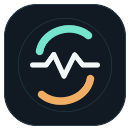

Ligne claire
Horizon Studio
110.0 BPM8A · La mineur02:48 / 04:26

SILLORADJ · PAR GAERISSON| ÉNERGIE | PRÉPARATION | DURÉE |
|---|
Horizon Studio
Les Passagers
La lecture et le prochain titre gardent la priorité.
| ID | Exigence | État | Constat et validation | Code |
|---|